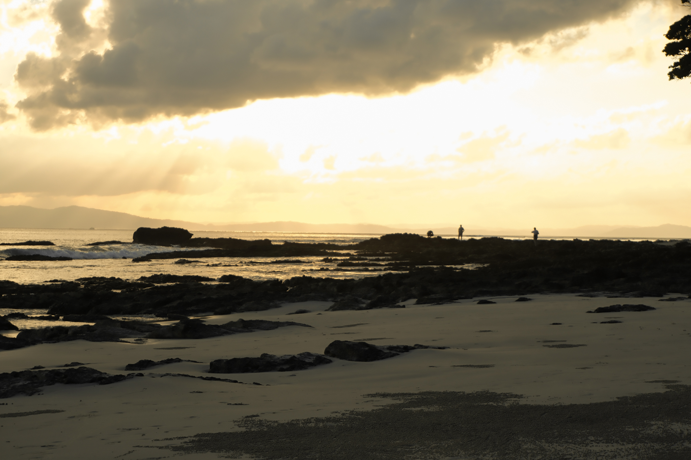
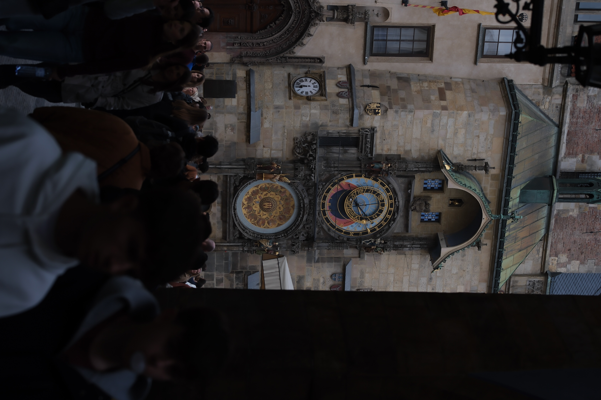
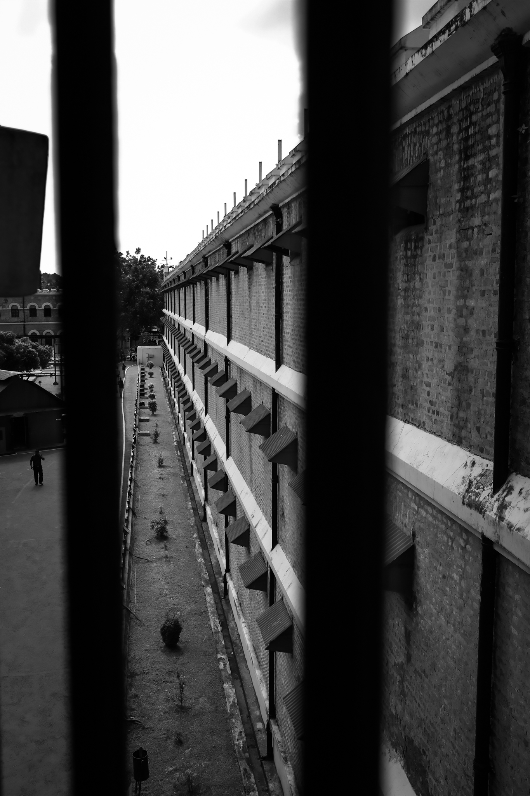
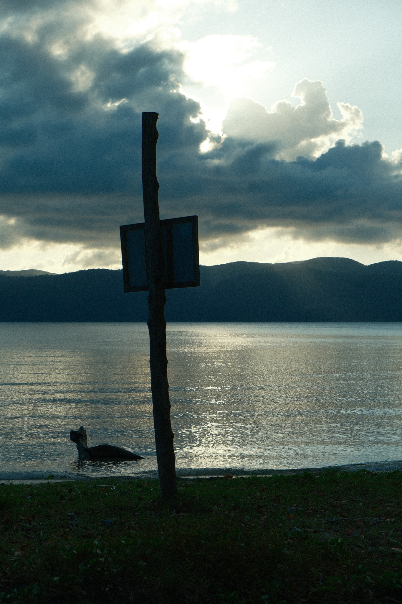
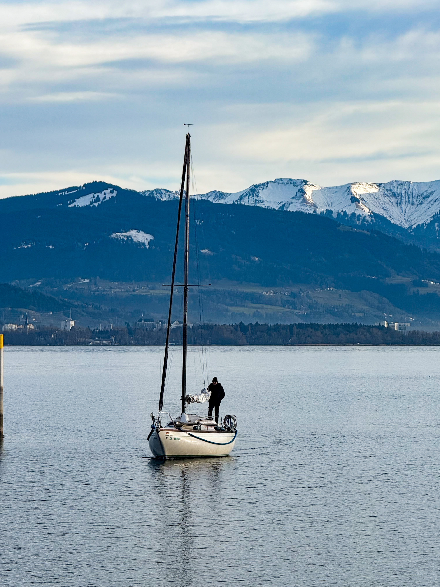

Chasing
Light

There's about a 10-minute window each evening when the light turns everything gold. I'd been waiting at this beach for two hours — this was that window. The kind of light that makes you forget you're holding a camera.
Low tide reveals a lone mangrove tree standing in the middle of perfectly clear water. No one else was around. Just the sound of small waves and this quiet, solitary tree — completely unbothered by everything.

December in Prague hits differently. The whole square transforms — warm lights, mulled wine, Christmas carols echoing off 600-year-old buildings. Tourists everywhere, but somehow it still feels magical.

The Orloj has been telling time since 1410. Six centuries of people stopping to look up at it — kings, travellers, tourists. I stood there for a while just thinking about that.

The British built this prison to isolate freedom fighters — solitary cells, no contact, no hope. Walking through it, you feel the weight of what happened here. History doesn't always sit quietly in museums.

Ranked among Asia's finest beaches, Radhanagar earns it at dusk. The silhouette of a signpost against that burning sky felt like the perfect metaphor — a marker at the edge of somewhere beautiful.

Lake Constance on a calm afternoon — a single sailboat barely moving, the Alps faint in the distance. I was on a weekend trip from Stuttgart. Some places slow you down without asking.
Lake Constance on a calm afternoon — a single sailboat barely moving, the Alps faint in the distance. I was on a weekend trip from Stuttgart. Some places slow you down without asking.